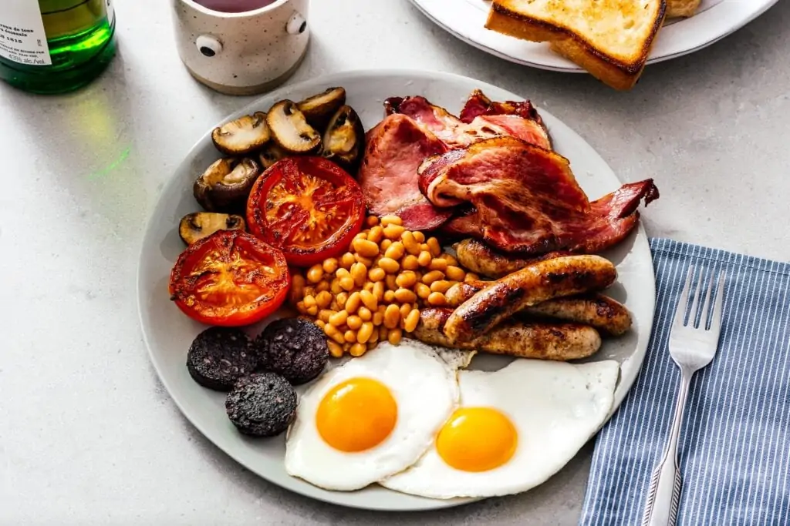

Home

Description
English full breakfast is a fantastic family dish to strat the day with all the energy you will need.
It typically consists of bacon, sausage, eggs (fried, scrambled or omeletes), tomatoes, mushrooms, baked beans, black pudding and toast/fried bread.
This is an english classic that has many varieties abroad including the continental breakfast in the US and EU.
It is a staple and balanced meal with all the food groups to keep you going. It is typically a treat to enjoy on the weekend or on holiday.
Often served with tea, coffee and orange juice.
- Bacon (Smoked, unsmoked, back or streaky)
- Pork Sausages
- Eggs
- Baked Beans
- Tinned Chopped Tomatoes or Fresh Tomatoes
- Black Pudding or Blood Sausage
- Bread Slices (White or Wholemeal)
- Salt and Pepper for seasoning
- Mushrooms
- Preheat grill to 200 Degrees Celsius
- Heat pan of cooking oil
- Grill suasages till cooked
- Grill bacon till cooked
- Add meat to preheated oven to stay warm when done
- Add beans and tinned tomatoes to saucepans (grill fresh tomatoes)
- Fry the black pudding until done on both sides and add to oven to stay warm
- Fry eggs, scramble or make omeletes with butter and season well
- Fry bread in residual oil or toast under grill
- Serve plated up together hot with toast on the side and butter/jam
- Serve with tea, coffee and/or Orange Juice and start the day right!